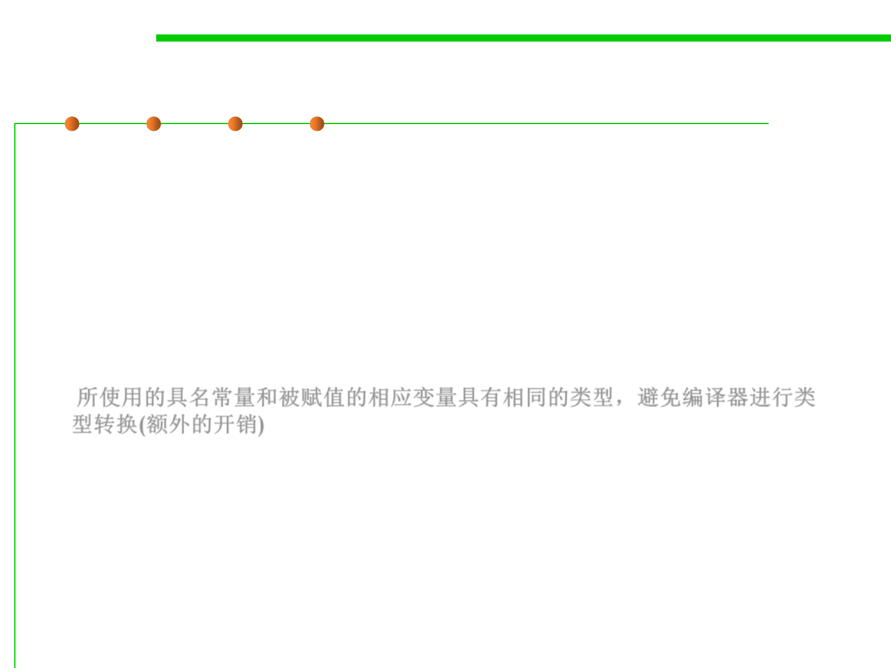

8.3 Code Tuning for Performance Optimization
Use correct type of constants
▪ Use named constants and literals that are the same type as the
variables they’re assigned to. When a constant and its related
variable are different types, the compiler has to do a type
conversion to assign the constant to the variable.
▪ A good compiler does the type conversion at compile time so that it
doesn’t affect run-time performance. But a less advanced compiler
or an interpreter generates code for a runtime conversion.
所使用的具名常量和被赋值的相应变量具有相同的类型，避免编译器进行类
型转换(额外的开销)